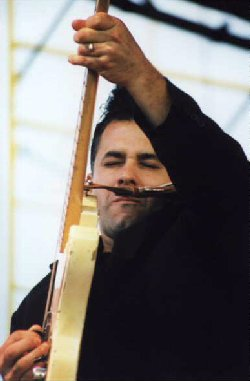

Ноябрь 2000, автор John Taylor
Фото Рэя Стайлса, все права защищены, copyright (c) 2001 by Ray Stiles
Дэвид «Кид» Рамос (David 'Kid' Ramos) воспитывался в музыкальной семье - оба его родителя были оперными певцами. Он заразился блюзом еще в раннем детстве. Использовав коллекцию записей своего старшего брата как отправную точку, он, следуя своему неутолимому любопытству, добрался до "Live At The Regal" Би Би Кинга. Можно сказать, что в тот момент судьба его была уже предопределена.
Он купил свой первый инструмент - акустическую гитару с нейлоновыми струнами - в возрасте 14 лет. Быстро смекнув, что это не инструмент для настоящего блюзмена, он стал искать исследовать ломбарды, до тех пор, пока не нашел электрогитару себе по карману. "Cтруны на ней стояли так высоко, что я резал пальцы в кровь!", вспоминает он.
Его карьера профессионального музыканта началась после того, как он получил работу в группе Джеймса Хармана. Джеймс был только рад поделиться с ним своими энциклопедическими знаниями и огромной библиотекой редких записей. Это знакомство, а также игра в паре с Hollywood Fats (в то время в группе Хармана было две солирующие гитары), помогли юному, полному сил Киду получить солидное блюзовое образование.
Позже Кид стал работать с Родом Пьяццой, а потом вовсе покинул музыкальный бизнес, так как семейная жизнь предъявляла свои требования. Он стал развозить минеральную воду, но в какой-то момент осознал, что «сегодняшняя вода ничем не отличается от воды вчерашней!». При поддержке своей жены он возобновил музыкальную карьеру, время от времени работая с Линвудом Слимом (Lynwood Slim) и выступая в составе Roomful Of Blues. Позже занял место гитариста в Fabulous Thunderbirds - группе, которая по иронии судьбы вдохновила его на то, чтобы заняться блюзовой музыкой. Он по прежнему часто выступает с T-Birds, но каким-то образом находит достаточно времени для активной сольной карьеры.
Третий сольный альбом Кида, удачно названный "West Coast House Party," вышел летом 2000 и получил единодушное одобрение публики. Это подборка джампово-свинговых блюзов при поддержке видных фигур калифорнийской блюзовой сцены.
"Я хотел сделать запись, полностью состоящую из гитарного уэст-коуст джамп блюза", говорит Кид, который кроме того еще и продюсировал проект. "Было здорово. Мы все сделали за два дня. Я просто пригласил всех, с кем хотел поработать." "Как только пошла запись - говорит Кид - началась настоящая большая вечеринка!" И еще какая вечеринка - в записи диска участвовали 20 музыкантов! На вопрос о том, как ему удалось справиться со всем организационным кошмаром и координацией графика записи, Кид отвечает со смехом: "Я на всякий случай зарезервировал третий день в студии, но рассчитывал, что двух дней должно быть достаточно". Он предпочитает работать быстро. "Мои лучшие соло удаются с первого дубля" - говорит он. "После я начинаю слишком много думать".
Несмотря на обилие разных музыкантов, запись получилась очень цельная. Кид не скупится на похвалы всем участникам за их профессионализм и музыкальные способности. "Это игроки высшей лиги, которые знают эту музыку как свои пять пальцев" - говорит он. "Если бы было иначе, не думаю, что мы смогли бы сдвинуться с места".
Как же составлялся список приглашенных на запись? Кид говорит, что сначала составлялся список песен. "Я перебрал кучу винила, чтобы выбрать те песни, которые мне нужны. А потом уже стал думать, кто лучше всего подходит для записи этого материала". Но несмотря на то, что это его собственный проект, Кид ограничил свою роль лишь тем, что определил стилистическое направление. "Все происходило очень расслабленно" - объясняет он. "Когда все приехали, я просто стал спрашивать их, чего бы им хотелось".
Многие из музыкантов - его старые друзья. Прежний босс Кида - Джеймс Харман - записал свой неповторимый вокал в песне "One Mo' Peep". Дюк Робиллард - воплощение свинга - был рад присоединиться к проекту. (Кид заменил Дюка, когда тот покинул T-birds). Дюк участвовал в записи трех песен вместе с Кларенсом Брауном (Clarence "Gatemouth" Brown); Кид познакомился с Гейтом во время совместных гастролей в составе T-Birds, они быстро сошлись. Три гитариста открывают альбом номером Ти-Боун Уокера "Strollin' With Bone (Part One)," он же и завершает запись - "Part Two" закрывает вечеринку.
Биг Сэнди (Big Sandy) дружит с Кидом на протяжении многих лет, Джеймс Интвелд (James Intveld) тоже. Он не известен широкой публике как блюзовый певец. "Он один из тех певцов, которые могут петь все что угодно", говорит Кид. "Он вкладывает душу во все, что делает". Яркий вокал Джеймса звучит в классической песне Роя Брауна (Roy Brown) "Love Don't Love Nobody". Энергичная гитара Расти Зинна (Rusty Zinn) и его уникальные вокальные стилизации звучат на двух треках альбома. Линвуд Слим заглянул на огонек, чтобы записать пару песен; Чарли Бэйти (Charlie Baty, Little Charlie And The Nightcats) участвовал в двух песнях, и вместе с Риком Холмстромом на треке "One Bar Short". Приятель Кида по T-Birds Ким Уилсон (Kim Wilson) поет две песни и играет на гармонике (гармоника звучит только один раз на диске) с Кидом и барабанщиком Стивеном Ходжесом (Stephen Hodges) в кавере известной "Real Gone Lover" Смайли Льюиса (Smiley Lewis). Джанива Магнесс (Janiva Magness), которая участвовала в двух предыдущих альбомах Кида, исполняет полную вожделения "Bring It Home To Me" Бадди Джонсона (Buddy Johnson) и Джуниора Ватсона (Junior Watson) вместе с Кидом, который, наверное, представляет собой квинтэссенцию калифорнийского гитарного стиля. Сам Кид называет Джуниора и Чарли 'сумасшедшими исследователями гитары'. Он обращается к микрофону (что он делает не часто) в песне, которая замечательно подводит итог всему - "House Party Tonight" Амоса Милбурна (Amos Milburn).
Многие музыканты были бы напуганы в окружении такого множества талантов. Кид, несмотря на это, относится ко всему спокойно. "Это было больше как общение на равных" - говорит он. "Проявление взаимного уважения. Я поклонник всех этих ребят, но кроме того мне повезло - ведь я могу считать их своими друзьями. Так что это было не соревнование и не гонка - это была возможность поработать вместе и получить удовольствие от процесса".
У Кида нет проблем с тем, чтобы отойти на задний план и дать другим возможность быть на переднем краю. "Песня - это все", говорит он. "Аккомпанемент - это искусство само по себе. Гитара должна что-то привносить в песню".
Существует огромная разница, продолжает он, между живым выступлением и записью. "Когда ты играешь концерт - ты устраиваешь шоу. Ты питаешься энергией зрителей, все что ты делаешь имеет значение именно в тот момент. Поэтому, естественно, я часто играю намного больше на сцене. На записи все по-другому. Ты пытаешься рассказать историю, которая должна выдержать испытание временем". А как получается хорошее гитарное соло? "Девяносто процентов хорошего соло - это звук" - говорит человек, чье имя - синоним сочного традиционного гитарного звука. "Если ты добьешься хорошего звука - он вдохновляет тебя играть в совершенно определенном ключе. Он заставляет тебя играть лирически, рассказывать историю. Но при этом просто необходимо свинговать".
Свинг. Одна из этих неуловимых вещей... каждый понимает, что свинг присутствует, когда слышит его, но откуда, скажите на милость, он берется? Кид считает, что все начинается с ритм-секции. "Если она не свингует, все остальное рушится" - говорит он. Трудно представить себе более плотную ритм секцию, чем почтенный дуэт барабанщика Стивена Ходжеса (Steven Hodges) и Лэрри Тейлора (Larry Taylor) на басу, дополненный Фредом Капланом (Fred Kaplan's) на фортепиано. "Да, они ребята что надо" - говорит Кид.
Но какой-же уэст-коуст свинг без драйвовой духовой секции. Джефф Термс (Jeff Turmes) сыграл на альбоме все партии баритон саксофона и аранжировал все партии духовых. "Джефф великолепен" - говорит Кид. "Он умеет добиваться этого грязного звука. Ведь это блюз - это идет вовсе не от джаза". Кид признается, что джаз ему не так близок. "Музыканты, которых я слушаю, на самом деле играют не джаз. Такие, как Illinois Jacquette. То, что они делают - это на самом деле блюз - они как бы выпавшее звено между джазом и блюзом".
Что же так привлекает Кида в блюзе... почему он посвящает свою жизнь стилю музыки, который, справедливости ради скажем, находится на обочине в век поп и хип-хоп музыки? "В нем есть нечто универсальное" - говорит он. "Ты слушаешь и немедленно идентифицируешь себя с тем, что слышишь. Люди, которые любят блюз, будут всегда и повсюду в мире, потому что он - настоящий. Он преступает возрастные, расовые и экономические границы".
Но разве этого не было до блюза? "Ничего подобного не было" - отвечает он. "Если вы слушаете классическую музыку, Бах всегда будет звучать так, как звучит Бах. А в блюзе все дело в интерпретации. Конечно же, надо относится к блюзу с уважением, придерживаться традиции. Но ты должен также поставить на нем свою собственную печать. В противном случае все это не имеет смысла".
А что Кид думает о том, что он сам является влиятельным музыкантом? "Ну, не знаю, продал ли я достаточно записей, чтобы называться влиятельным", смеется он. "Очень важно не ограничивать себя. Я знаю, сегодня так много ребят, которые думают, что все начинается и заканчивается Стиви Рей Воном или Оллман Бразерс. Это конечно хорошо, до определенного момента. Но все не должно на этом заканчиваться. Надо изучать, выяснять, откуда эти музыканты взяли это, пытаться понять, как они сделали эту музыку своей. А потом делать ее своей музыкой".
Сам Кид считает, что он еще даже не прикоснулся по-настоящему к пониманию блюза. "Надо столько еще сделать" - говорит он. Неутомимый, он не относится ни к тем, кто оглядывается назад, ни к тем, кто почивает на лаврах. "Последняя песня записана. Время двигаться дальше" - говорит он, добавляя, что надеется, что его подход к записи следующего проекта будет схожим, но при участии некоторых харперов, с кем ему приходилось работать в течение его карьеры.
Учитывая, что в этот список включает в себя таких крупных харперов как Ким Уилсон, Джеймс Харман, Род Пьяцца и Линвуд Слим, этого альбома стоит ожидать с нетерпением!
Авторские права на данную рецензию принадлежат (c) 2001 Джону Тейлору, и
Blues On Stage, все
права защищены. Копирование, тиражирование и публикация без письменного
разрешения запрещена.
Для получения разрешения на использование данной
рецензии, пошлите запрос Рэю Стайлсу.
Перевод с английского Арсена Шомахова
Оригинал интервью